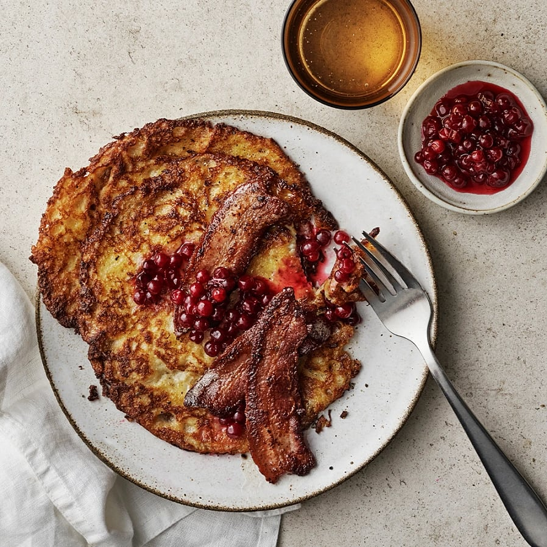

Kvällens middag är en underbart god husmansrätt där smaker och texturer möts. Raggmunkarna steks tills de är gyllenbruna och lagom krispiga och serveras med knaperstekt fläsk och sötsyrlig lingonsylt som lyfter rätten ytterligare. Smaklig måltid!
2 dl vetemjöl
4 dl mjölk
2 ägg
1/2 tsk salt
900 g fast potatis
ca 375 g skivat rimmat sidfläsk eller stekfläsk
2 msk smör eller margarin
3 morötter
Lingonsylt